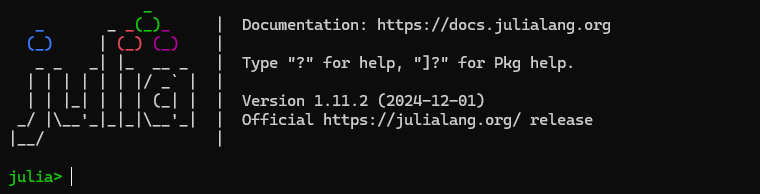
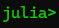
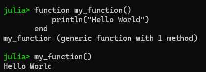
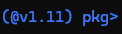
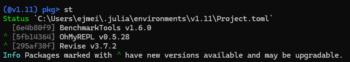
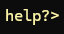
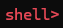
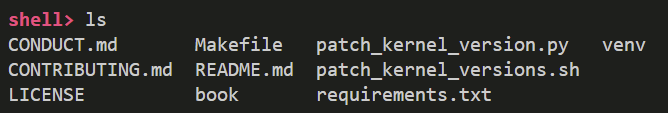
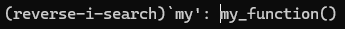

Julia REPL#
Julia’s REPL (Read-Eval-Print Loop) is an interactive command-line interface that allows users to execute Julia code in real time. It provides a convenient way to experiment with code, test functions, and explore the language’s features.
Accessing the REPL#
In your terminal, type
juliaand hit EnterIn VSCode, go to the command menu (Cmd + ⇧+P on Mac, or Ctrl on Windows) and type
Julia: Start REPL
You should be greeted by this screen. You can now execute Julia code as you please!
REPL Modes#
The Julia REPL has five modes of operation: Julian, Package, Help, Shell, and Search. All modes are activated by a specific key, and deactivated by pressing backspace. More details on each can be found here.
Julian Mode (default):#
 In Julian mode you are able to write and execute Julia code. For example, you could define a function and then call it. 
Package Mode (activated by ]):#

In the package mode, you will see the currently active environment. The handle format is (<env-name>) pkg>. By default, the global environment for your current Julia version is active (e.g., @v1.11). Packages in this environment are always available. The package mode grants quick access to methods in the Pkg package. For example, you can type add <package-name> to install a package. Other useful commands include, activate <env-path>, st, up, resolve, instantiate. For example, st and status list all packages in the current environment:

The full documentation for the package manager can be found here.
Help Mode (activated by ?):#

In the help mode you can query the docstring for any function or struct availaible in the current environment. For example, when querying cos you should see
Shell Mode (activated by ;)#

The shell mode allows you to execute system commands. Windows shell commands are not supported. However, Powershell or command prompt can be entered by typing cmd or powershell. Example usage of ls on a Linux machine:

Search Mode#
In all modes, the executed lines are saved and searchable. Just type ^R (Ctrl + R for me) and it will open a reverse search prompt where you can search prior commands.

Customization of the REPL#
OhMyREPLis a package that adds some nice defaults for color-coding and syntax highlighting, you can add it to your environment by typing] add OhMyREPLfrom the REPLMore customization: The
startup.jlfile in Julia is an optional file that can be used to execute custom code every time a Julia session starts. It can be useful for setting configurations, loading frequently used packages, or defining custom functions.Location of startup.jl on different operating systems:
Linux/macOS:
~/.julia/config/startup.jl
Windows:
C:\Users\YourUsername\.julia\config\startup.jl
Environment setup#
To create a new project, use
]to enter the package manager mode and then typegenerate MyNewProjectto create a new project within the specified directory.Julia uses project-specific environments to manage dependencies by maintaining separate
Project.tomlandManifest.tomlfiles for each environment, ensuring that package versions are isolated and reproducible. You can activate and work within a specific environment usingPkg.activate("path/to/project"), allowing for flexible and independent package management across projects.Pkg.instantiate()is a Julia function used to install all the dependencies for a project, based on the information stored in theProject.tomlandManifest.tomlfiles. Here’s what it does:If your project has a
Manifest.tomlfile,Pkg.instantiate()will install the exact versions of the packages listed there, ensuring that the environment is fully reproduced as specified.If there’s no
Manifest.tomlfile, but there’s aProject.toml, it will resolve and install the necessary package dependencies based on theProject.tomlfile, generating a newManifest.tomlin the process.
After doing this in our repo, we can do:
Pkg.status(), which displays the current status of the project, listing installed packages and their versions.